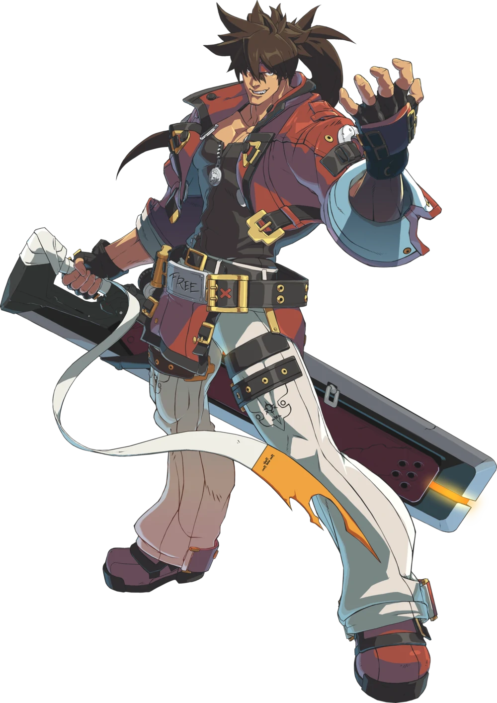
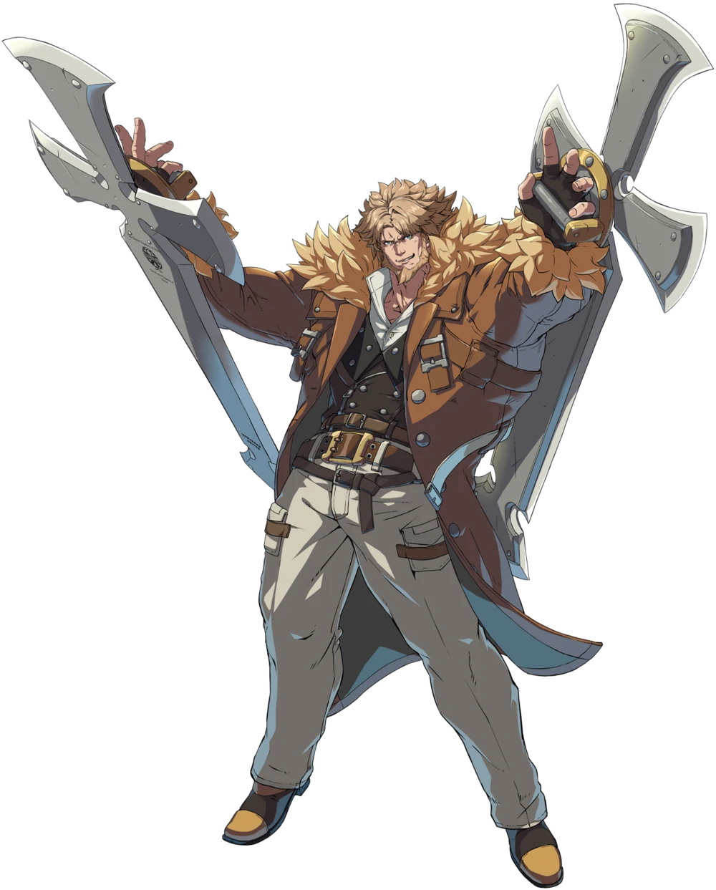
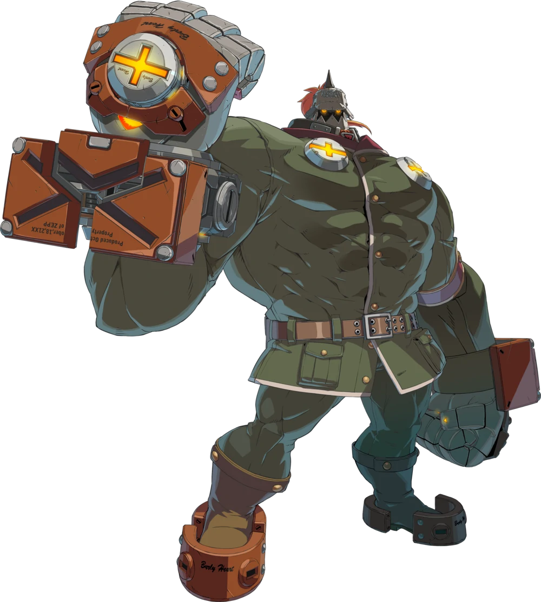
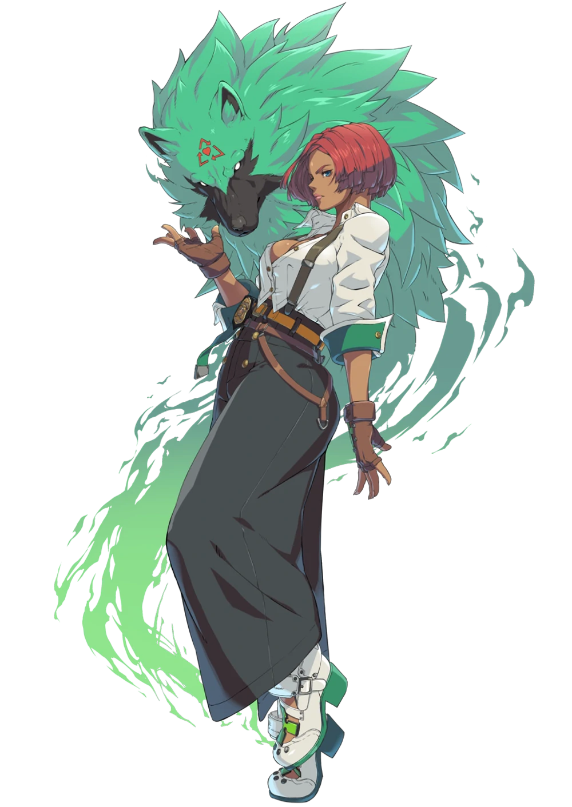

| Name | Portrait | Description | Link |
|---|---|---|---|
| Sol |  | Sol Badguy is the protagonist of the Guilty Gear series. He wields a large sword with a reverse grip and has a headband that covers his mark as a Gear. | GG Fandom Link |
| Leo |  | Leo Whitefang is the 2nd king of Illyria and was a general in the Crusades. He wields 2 swords and has 2 stances, each with their own abilities. | GG Fandom Link |
| Potemkin |  | Potemkin is a former slave in the late Zepp Empire. His strength can move mountains. He is currently leading a democratic revolution alongside President Gabriel. | GG Fandom Link |
| Giovanna |  | Giovanna is an agent working for the President of the United States of America. She has a companion dog named Rei and doesn't want any trouble. | GG Fandom Link |